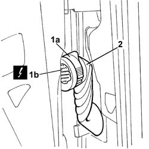
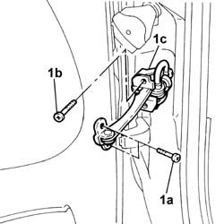
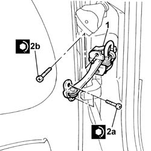

7005A28 front side door limiter- repair or replace
- Path
- Procedures > 70 FITTINGS > 7005 PASSENGER COMPARTMENT FRONT SIDE DOORS > 7005A front side door assembly > 7005A28 front side door limiter- repair or replace
- Kind
- repair procedure (removal / refitting; the operation number is the code)
- Applies to
- all engines; all production periods
- Interactive page
- https://sloeber94.github.io/elrnDB-fDbl/en/#/2584987
Applies to: all engines; all production periods
 Removing
Removing
 Refitting
RefittingOp. 5505A10 ELECTRICAL JUNCTION UNIT - R+R
Op. 5505A33 BODY COMPUTER - R.R. WITH JUNCTION UNIT REMOVED
Op. 7040L40 FRONT DOOR HOUSING RUNNING BOARD (ONE), LEFT OR RIGHT - R.R.
1. Raise the lever (1a) and disconnect the electrical connector (1b).
 | Name | Connector |
|---|---|---|
1b | Front left door connection |
| Name | Connector |
|---|---|---|
1b | Front right door connection |
2. Remove the connector from its seating.

Applies to: all engines; all production periods
1. Undo the fixing bolts, (1a) door side and (1b) bodywork side, and remove the check strap (1c).

Applies to: all engines; all production periods
Refitting
Removing1. Fit the check strap.
2. Tighten the fixing bolts, (2a) door side and (2b) bodywork side, to torque.
 | Fastening | Component | Ø | Value (daNm) |
|---|---|---|---|---|
1a | Bolt | FRONT DOOR OPENING LIMITER | M6 | (door) 1.2 |
| Fastening | Component | Ø | Value (daNm) |
|---|---|---|---|---|
1a | Bolt | FRONT DOOR OPENING LIMITER | M6 | (bodyshell) 1.2 |

Applies to: all engines; all production periods
Reposition and connect the door's electrical connector.
| Name | Connector |
|---|---|---|
- | Front left door connection |
| Name | Connector |
|---|---|---|
- | Front right door connection |
Op. 7040L40 FRONT DOOR HOUSING RUNNING BOARD (ONE), LEFT OR RIGHT - R.R.